Precipitation Forecasts from Different Starting Times
The plots below contain gridded observations and forecasts of precipitation accumulated between midnight 1 July 1993 and midnight 2 July 1993. The same data (NCEP-DOE Reanalysis-II) were used to generate conditions at the forecast start time and the boundary conditions supplied to the model. The start time was varied such that each forecast was begun a day earlier. Thus, the forecast start times are June 30 7pm CDT (1-day forecast), June 29 7pm CDT (2-day forecast), June 28 7pm CDT (3-day forecast), June 27 7pm CDT (4-day forecast), and so on.
Observed accumulated precipitation (units are inches)
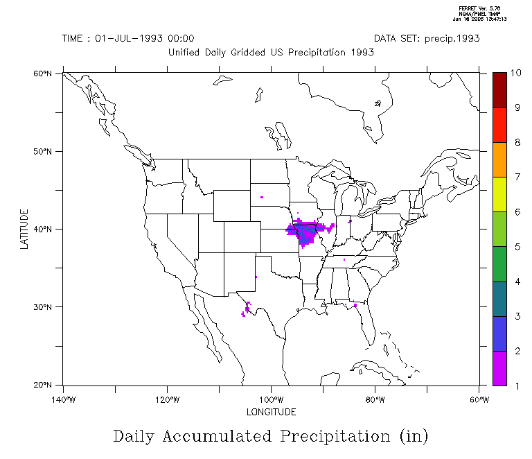
1-day forecast of accumulated precipitation (units are inches)
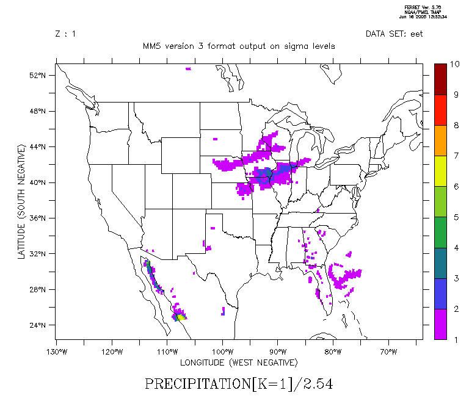
2-day forecast of accumulated precipitation (units are inches)
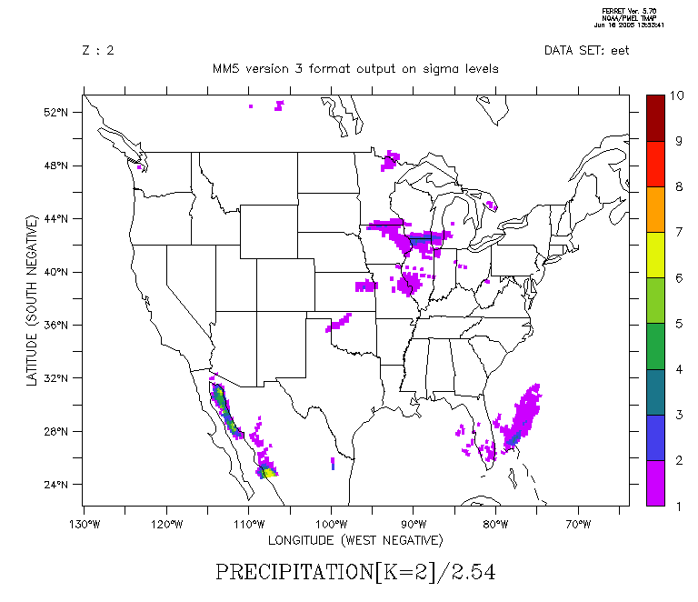
3-day forecast of accumulated precipitation (units are inches)
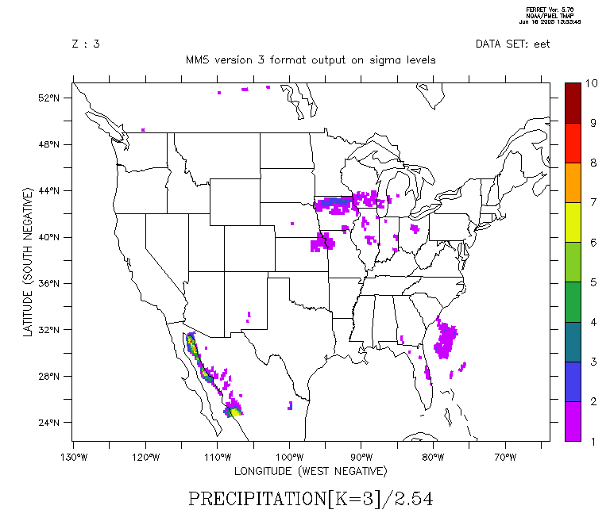
4-day forecast of accumulated precipitation (units are inches)
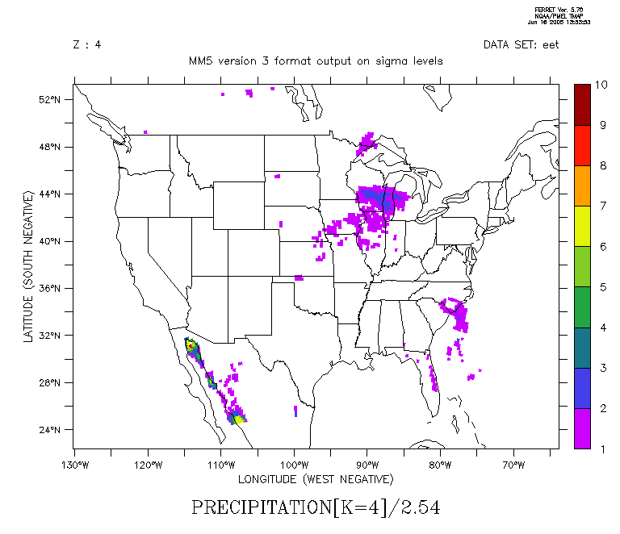
5-day forecast of accumulated precipitation (units are inches)
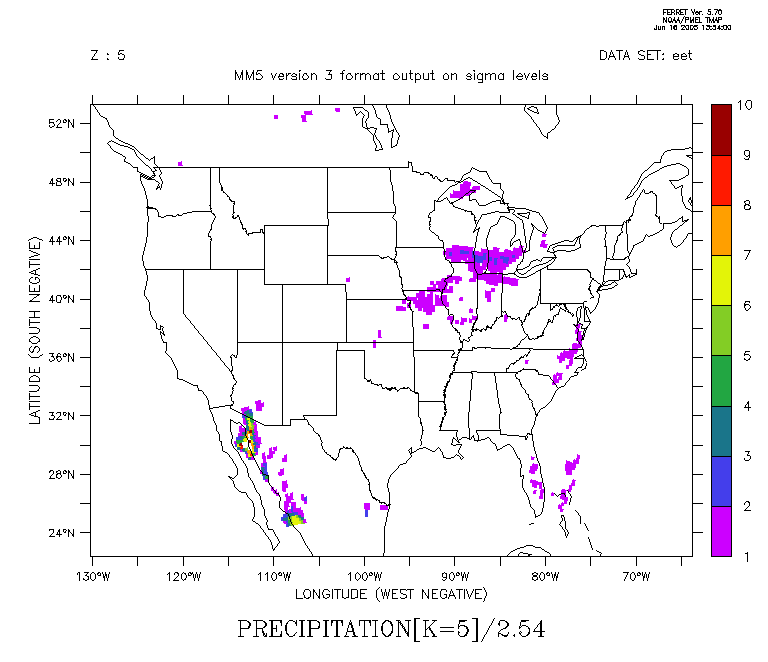
6-day forecast of accumulated precipitation (units are inches)
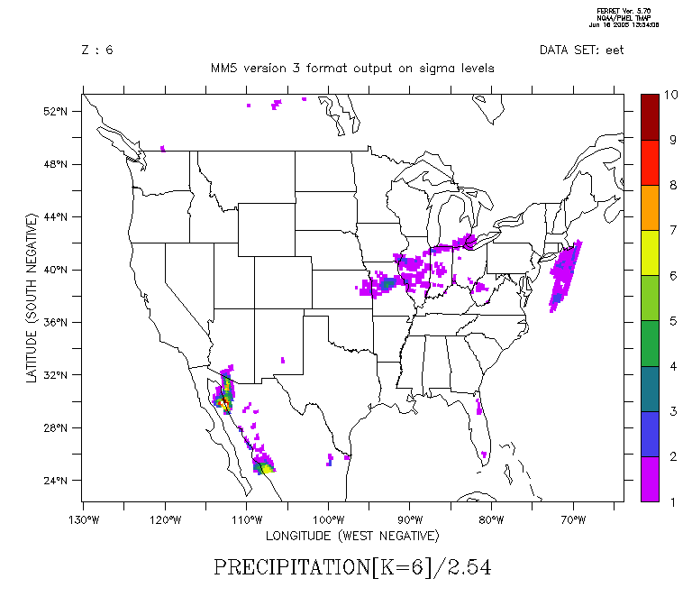
7-day forecast of accumulated precipitation (units are inches)
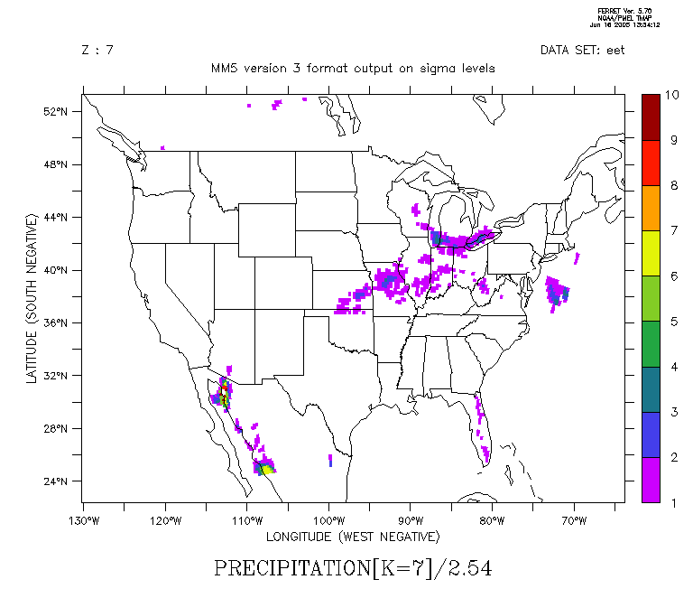
8-day forecast of accumulated precipitation (units are inches)
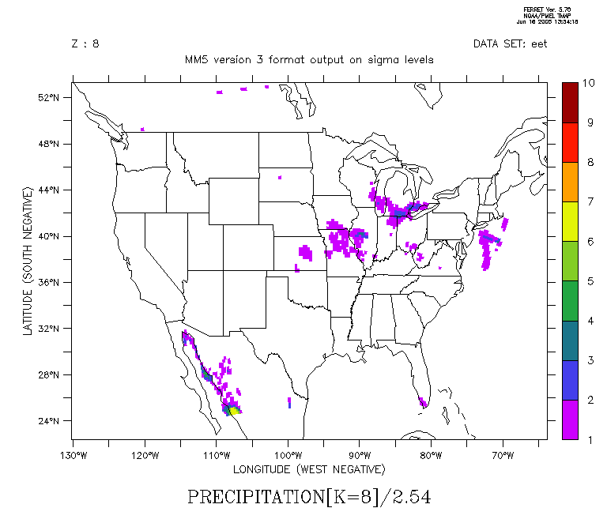
9-day forecast of accumulated precipitation (units are inches)
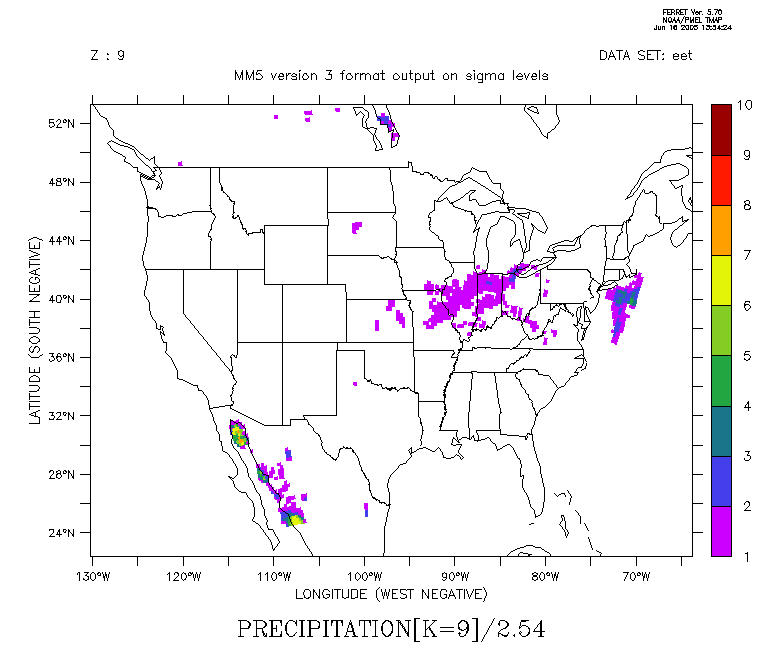
10-day forecast of accumulated precipitation (units are inches)
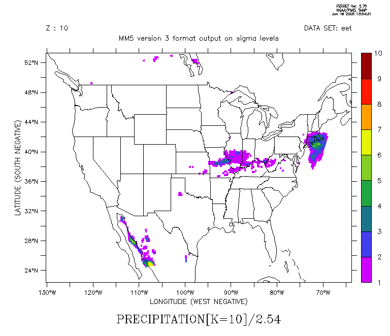